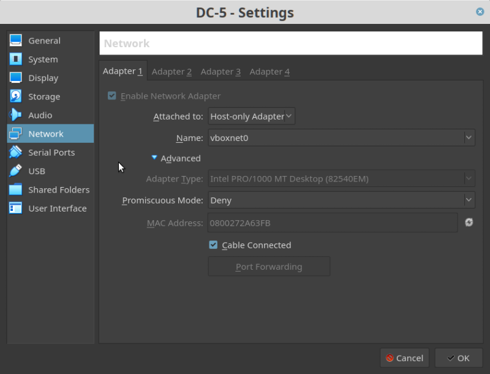
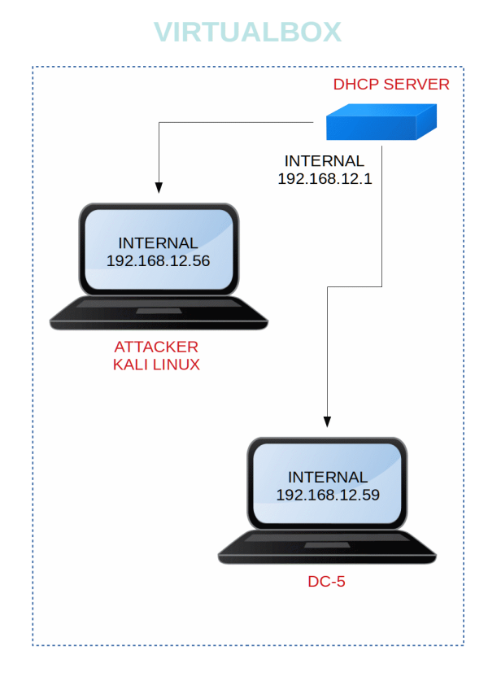

DC-5
▸ DC-5
▸ 1. Scan Network
▸ 2. Finding Services and Ports
▸ 3. Enumerate
▸ 3.1 Gobuster
▸ 3.2 Local file inclusion (LFI)
▸ 3.3 Read the logs
▸ 3.4 Exploit LFI
▸ 3.5 Netcat shell with cmd
▸ 4. Privilege Escalation
▸ 4.1 Compile the exploit
▸ 4.2 Upload files to the Victime Machine
▸ 5. Capture the flag
Difficulty: Intermediaite.
Flag: 1 flag.
Learning:
• Discovering Targets IP.
• Network scanning (Nmap).
• Surfing HTTP service port.
• Abusing CMS using LFI.
• Checking Ngnix Access Logs.
• Exploiting LFI vulnerability using Burpsuite.
• Using Netcat to get the reverse shell.
• Spawning a tty shell.
• Checking SUID binaries.
• Kernel Privilege Escalation.
• Accessing root directory.
• Capture the flag.
Download: http://www.five86.com/downloads/DC-5.zip
Download (Mirror): https://download.vulnhub.com/dc/DC-5.zip
Download (Torrent): https://download.vulnhub.com/dc/DC-5.zip.torrent
Install the machine on VirtualBox:
1. Download the file and extract it.
2. On Virtualbox choose File->Import Appliance.
3. Select the file “ova”.
4. Accept to import.


Watch your Machine IP.
Output:

Diagram

 Index
Index